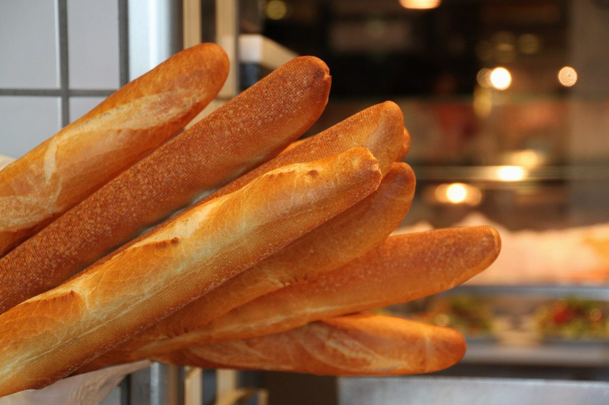

制作側の連想
打錠機の部位を、配置図にしてみる
このサイトは、粉を固めて錠剤にする機械「打錠機(ロータリー式)」を正面から見た図に見立てて作りました。六つの部位に番号をふり、上の図と並べています。制作側の連想で、お店の理念・由来とは無関係です。実際の打錠機の仕様を示すものでもありません。
凡例
六つの部位
- 1ホッパー粉をためておく、上の漏斗のような容器。
- 2フィードシューホッパーの粉を、下の穴へ流し込む部分。
- 3ターレット杵を通す穴が円周に並ぶ、回転する円盤。
- 4上杵穴に入った粉を、上から押し固める棒。
- 5下杵穴の底になり、押し固めたあとは持ち上げて固まりを送り出す棒。
- 6排出シュートできあがった固まりを、機械の外へ滑らせる通り道。
写真(イメージ)
コーヒーの写真



写真はコーヒーのイメージです。お店のものではなく、お店で提供している商品を示すものでもありません。
写真(イメージ)
パンとコーヒー豆の写真


写真はパンとコーヒー豆のイメージです。お店のものではなく、お店で提供している商品を示すものでもありません。
ご案内
お店のこと(確認できたものだけ)
| 所在地 | 〒047-0152 北海道小樽市新光2丁目20-31 |
|---|---|
| 電話 | 準備中 |
| 営業時間 | 準備中 |
| 定休日 | 準備中 |
| ご予約 | 準備中 |
| 駐車場 | 準備中 |
| SNS | Instagram @otarutokajitsu |